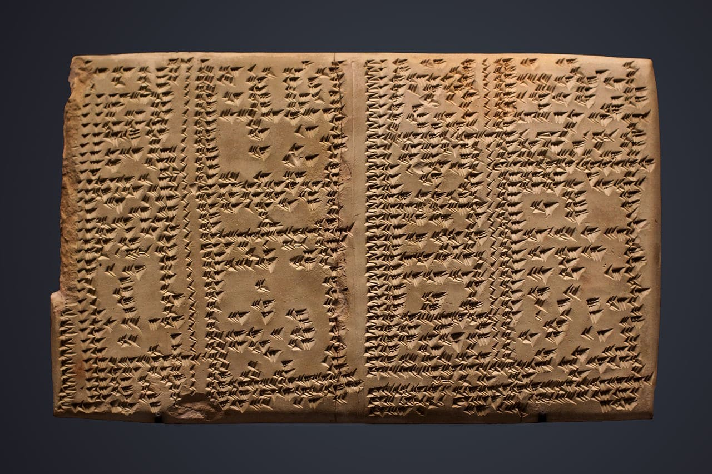
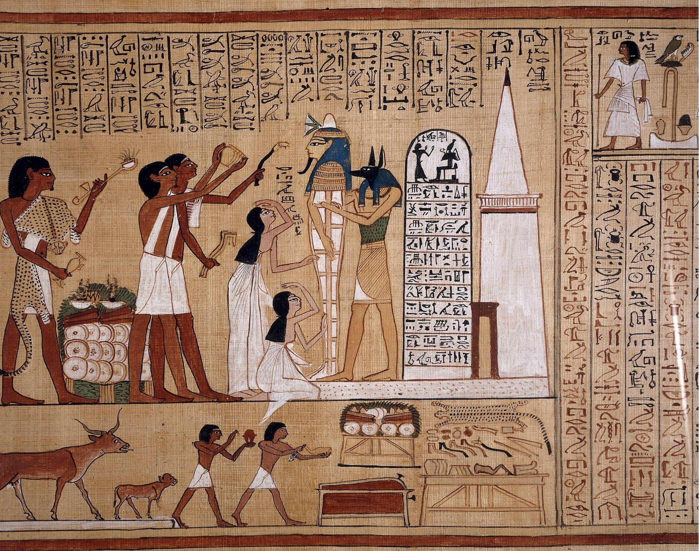
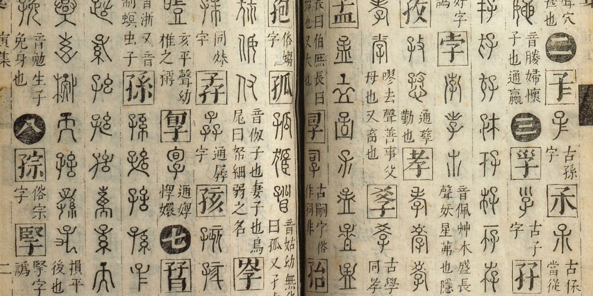
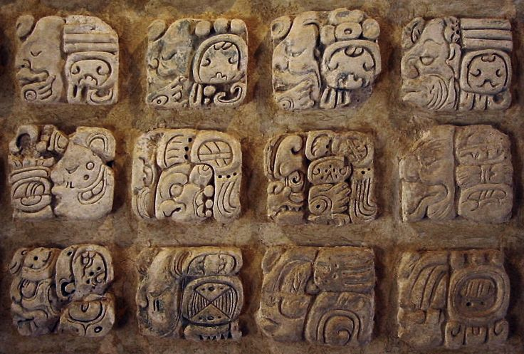
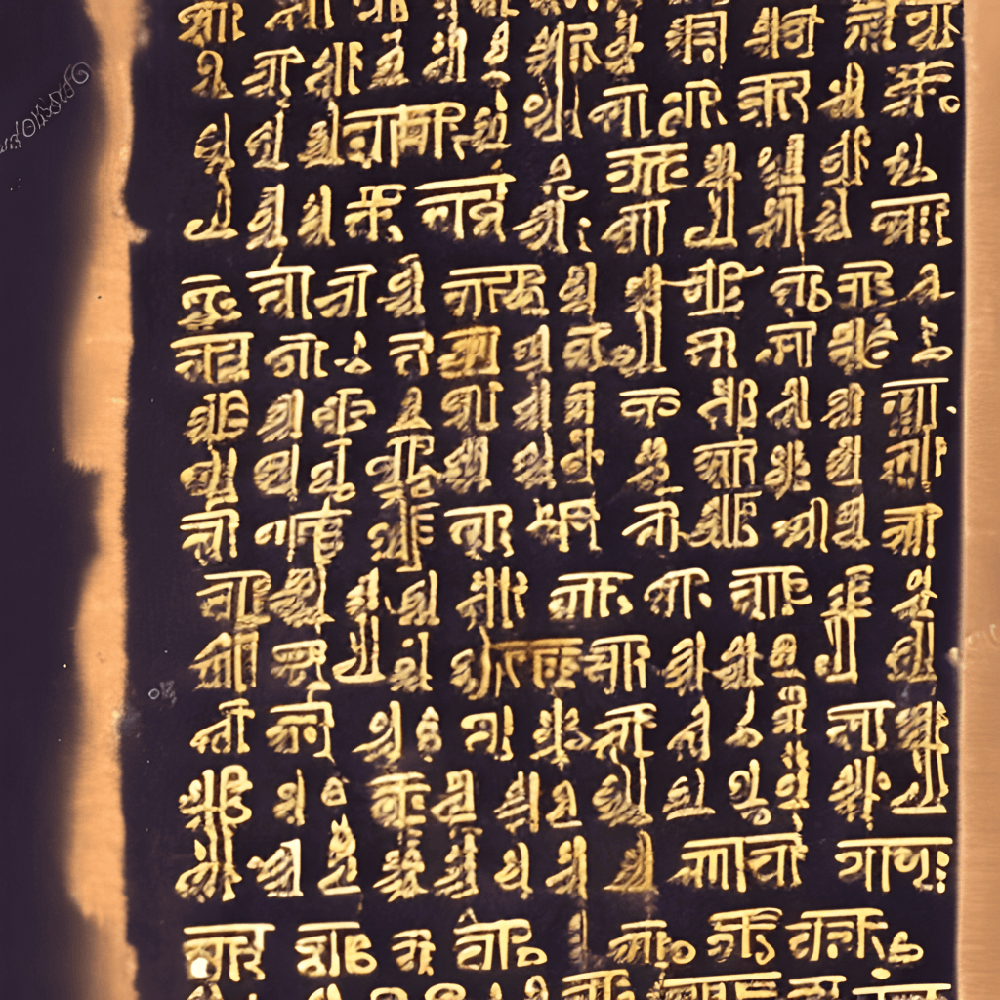
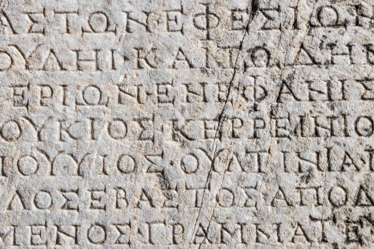

L’écriture est l’une des plus grandes inventions de l’humanité. Elle apparaît vers 3300 avant J.-C. en Mésopotamie, sous la forme de l’écriture cunéiforme, et en Égypte avec les hiéroglyphes.
Les Sumériens utilisent l’écriture cunéiforme pour noter les échanges commerciaux, les lois et les récits mythologiques. Les tablettes d’argile servaient de supports. En savoir plus
En Égypte, les hiéroglyphes sont utilisés pour raconter l’histoire des pharaons et pour les textes religieux. Les murs des temples et les papyrus étaient les principaux supports. En savoir plus
Les premiers caractères chinois sont apparus vers 1200 avant J.-C., sous la dynastie Shang. Ces inscriptions ont été retrouvées sur des carapaces de tortue et des os, servant à la divination. En savoir plus
En Amérique, les civilisations mayas et aztèques ont développé des systèmes d’écriture avancés. Les Mayas utilisaient des glyphes complexes pour enregistrer les événements historiques, les rituels et les récits mythologiques. En savoir plus
Le système d’écriture en Brahmi, apparu vers le 3e siècle avant J.-C., est l’ancêtre de nombreuses écritures modernes en Inde, dont le devanagari utilisé pour le sanskrit et l’hindi. En savoir plus
Les Grecs ont perfectionné l’alphabet phénicien pour créer leur propre système, donnant naissance à l’alphabet grec. Les Romains ont ensuite adopté une version modifiée de cet alphabet, qui est à la base de l’alphabet latin utilisé aujourd’hui. En savoir plus
Les supports d’écriture ont évolué avec les civilisations : En savoir plus sur les supports
Où l’écriture cunéiforme est-elle apparue ?